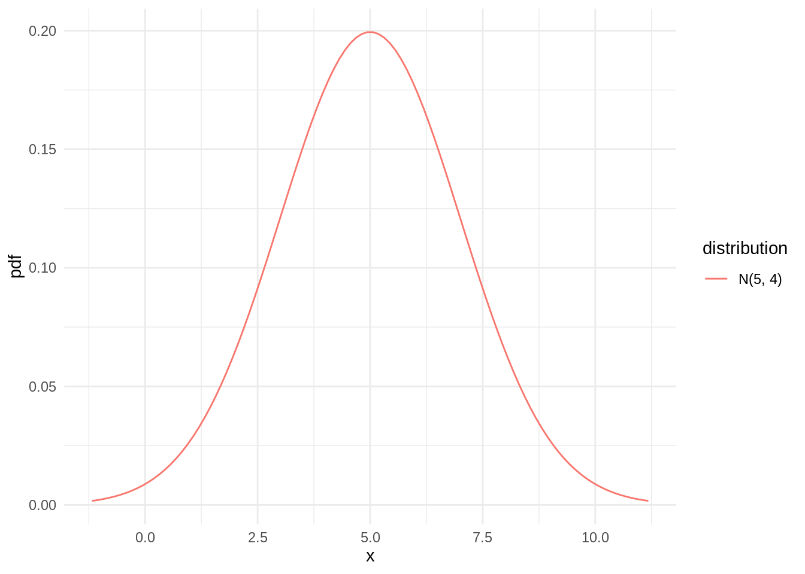
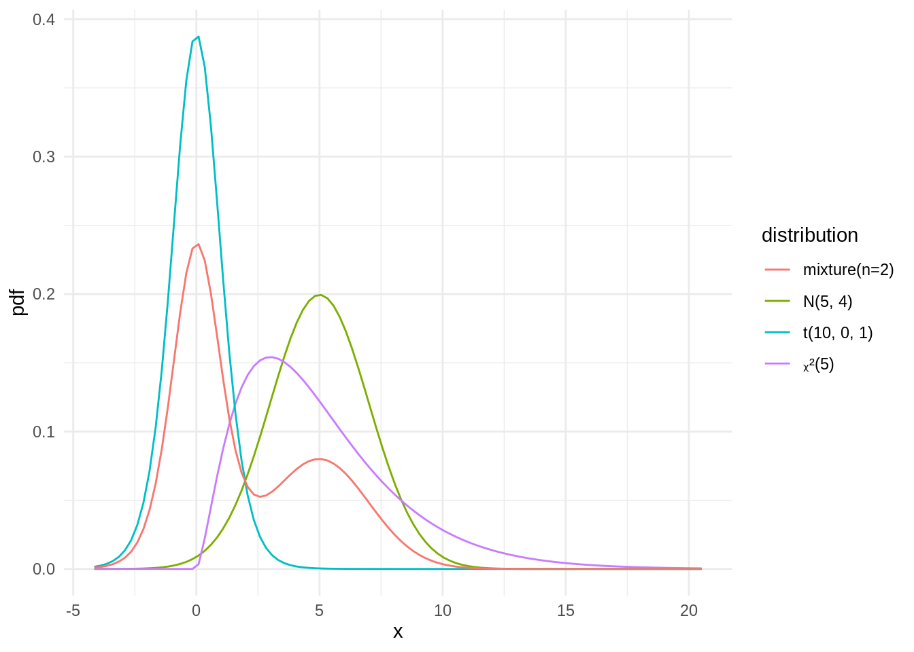
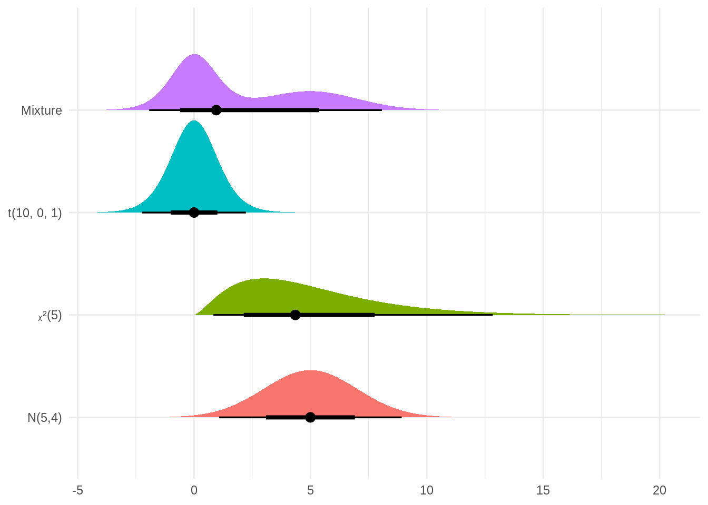
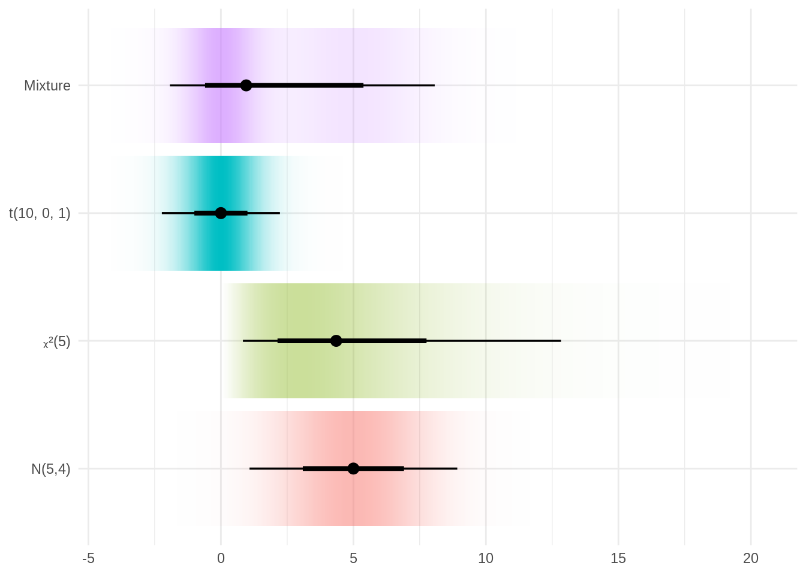
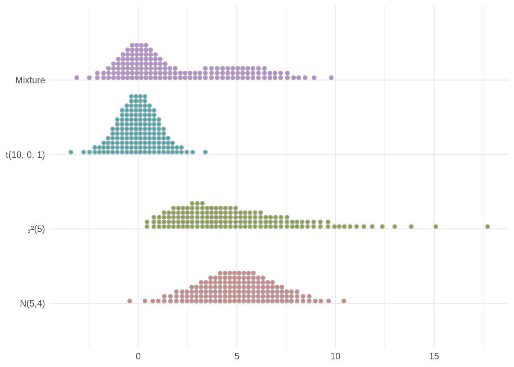

library(distributional)
library(ggplot2)
theme_set(theme_minimal())Création d’une loi normale
dn <- dist_normal(mu = 5, sigma = 2)
dn## <distribution[1]>
## [1] N(5, 4)class(dn)## [1] "distribution" "vctrs_vctr" "list"Quelques quantités d’intérêt
list(mean = mean(dn), median = median(dn), variance = variance(dn),
skewness = skewness(dn), kurtosis = kurtosis(dn))## $mean
## [1] 5
##
## $median
## [1] 5
##
## $variance
## [1] 4
##
## $skewness
## [1] 0
##
## $kurtosis
## [1] 0Courbes
autoplot(dn) 
Intervalles
hilo(dn) # intervalle de confiance## <hilo[1]>
## [1] [1.080072, 8.919928]95hdr(dn) # intervalle du ou des modes## <list_of<hilo>[1]>
## [[1]]
## <hilo[1]>
## [1] [4.872133, 5.127867]95Échantillonage
sample <- generate(dn, times = 10)
sample## [[1]]
## [1] 5.150840 5.680278 4.547983 9.418111 8.329014 4.648172 5.119423 5.030634
## [9] 5.466967 4.389922likelihood(dn, sample)## [1] 1.821697e-09cdf(dn, 5)## [1] 0.5quantile(dn, 0.5)## [1] 5Calculs
2 * dn - 5 ## <distribution[1]>
## [1] N(5, 16)dn ^ 2 # ne connait pas## <distribution[1]>
## [1] t(N(5, 4))dchi <- dist_chisq(df = 5)
dt <- dist_student_t(df = 10)
dm <- dist_mixture(dt, dn, weights = c(0.6, 0.4))
dvec <- c(dn, dchi, dt, dm)
dvec## <distribution[4]>
## [1] N(5, 4) ᵪ²(5) t(10, 0, 1) mixture(n=2)autoplot(dvec)
mean(dvec)## [1] 5 5 0 2variance(dvec)## [1] 4.00 10.00 1.25 8.35hilo(dvec, size = 66)## <hilo[4]>
## [1] [ 3.0916695, 6.908331]66 [ 2.1361740, 7.759460]66 [-1.0019404, 1.001940]66
## [4] [-0.5978206, 5.379412]66cdf(dvec, 5)## [1] 0.5000000 0.5841198 0.9997313 0.7998388library(ggdist)
df <- data.frame(name = factor(c("N(5,4)", "\u1d6a²(5)", "t(10, 0, 1)", "Mixture"),
levels = c("N(5,4)", "\u1d6a²(5)", "t(10, 0, 1)", "Mixture")),
dist = dvec)
df## name dist
## 1 N(5,4) N(5, 4)
## 2 ᵪ²(5) ᵪ²(5)
## 3 t(10, 0, 1) t(10, 0, 1)
## 4 Mixture mixture(n=2)ggplot(df) +
aes(y = name, dist = dist, fill = name) +
stat_dist_halfeye(show.legend = FALSE, .width = c(0.66, 0.95)) +
labs(x = NULL, y = NULL)
ggplot(df) +
aes(y = name, dist = dist, fill = name) +
stat_dist_gradientinterval(show.legend = FALSE) +
labs(x = NULL, y = NULL)
ggplot(df) +
aes(y = name, dist = dist, fill = name) +
stat_dist_dots(quantiles = 150, show.legend = FALSE) +
labs(x = NULL, y = NULL)
dp <- dist_poisson(4)
dp## <distribution[1]>
## [1] Pois(4)mean(dp)## [1] 4generate(dp, 10)## [[1]]
## [1] 4 1 4 5 2 3 6 3 7 6Loi inflatée
dpi <- dist_inflated(dp, 0.5, x = 0)
dpi## <distribution[1]>
## [1] 0+Pois(4)mean(dpi)## [1] 2generate(dpi, 10)## [[1]]
## [1] 3 0 0 6 0 3 3 0 0 0ls("package:distributional", pattern = "^dist_")## [1] "dist_bernoulli" "dist_beta"
## [3] "dist_binomial" "dist_burr"
## [5] "dist_cauchy" "dist_chisq"
## [7] "dist_degenerate" "dist_exponential"
## [9] "dist_f" "dist_gamma"
## [11] "dist_geometric" "dist_gumbel"
## [13] "dist_hypergeometric" "dist_inflated"
## [15] "dist_inverse_exponential" "dist_inverse_gamma"
## [17] "dist_inverse_gaussian" "dist_logarithmic"
## [19] "dist_logistic" "dist_mixture"
## [21] "dist_multinomial" "dist_multivariate_normal"
## [23] "dist_negative_binomial" "dist_normal"
## [25] "dist_pareto" "dist_percentile"
## [27] "dist_poisson" "dist_poisson_inverse_gaussian"
## [29] "dist_sample" "dist_student_t"
## [31] "dist_studentized_range" "dist_transformed"
## [33] "dist_truncated" "dist_uniform"
## [35] "dist_weibull" "dist_wrap"